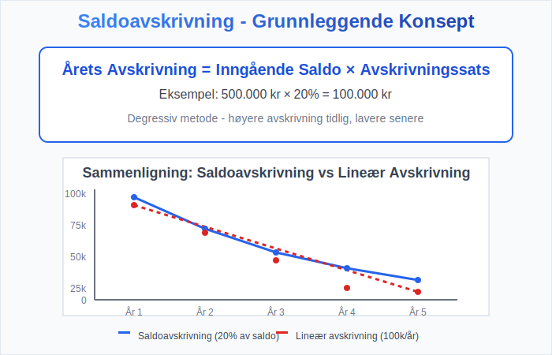
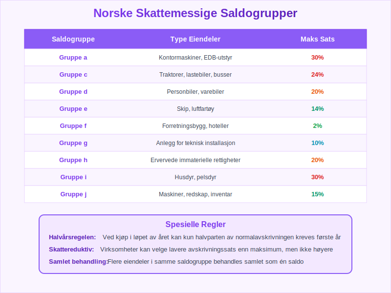
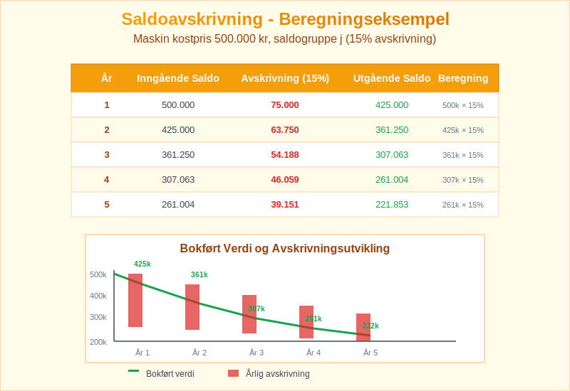
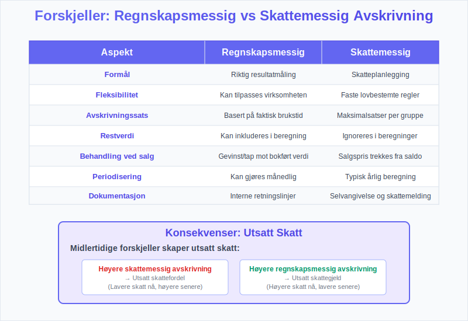
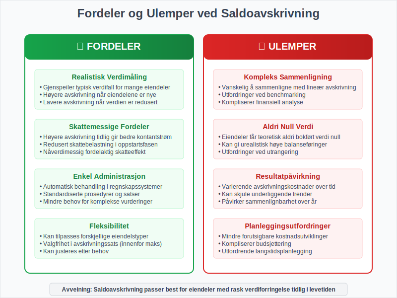
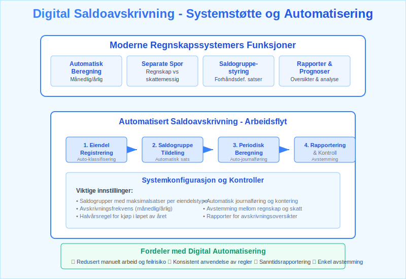

Saldoavskrivning er en av de mest brukte avskrivningsmetodene i norsk regnskap, hvor anleggsmidler avskrives med en fast prosentsats av den gjenstående bokførte verdien hvert år. Metoden brukes ofte for varige driftsmidler som maskiner, biler og IT-utstyr. Denne metoden gir høyere avskrivninger i de første årene og lavere avskrivninger senere, noe som gjenspeiler den typiske verdiforringelsen av mange eiendeler. Denne artikkelen gir en grundig gjennomgang av saldoavskrivning, beregningsmetoder og praktisk anvendelse.
Seksjon 1: Grunnleggende om Saldoavskrivning
1.1 Definisjon og Konsept
Saldoavskrivning er en degressiv avskrivningsmetode hvor avskrivningen beregnes som en fast prosentsats av den gjenstående bokførte verdien ved årets begynnelse. I motsetning til lineær avskrivning som gir like store avskrivninger hvert år, synker avskrivningsbeløpet hvert år med saldoavskrivning.

1.2 Formel for Saldoavskrivning
Den grunnleggende formelen for saldoavskrivning er:
Årets avskrivning = Inngående saldo × Avskrivningssats
Hvor:
- Inngående saldo = Bokført verdi ved årets begynnelse
- Avskrivningssats = Fast prosentsats fastsatt for eiendelsgruppen
1.3 Sammenligning med Andre Avskrivningsmetoder
| Metode | Karakteristikk | Avskrivning år 1 | Avskrivning år 5 |
|---|---|---|---|
| Saldoavskrivning | Degressiv, høy i starten | Høy | Lav |
| Lineær avskrivning | Konstant over tid | Middels | Middels |
| Produksjonsavskrivning | Basert på bruk | Variabel | Variabel |

Seksjon 2: Saldoavskrivning i Norsk Skattelovgivning
2.1 Skattemessige Saldogrupper
Norsk skattelovgivning deler avskrivbare eiendeler inn i forskjellige saldogrupper med fastsatte maksimale avskrivningssatser:
| Saldogruppe | Type Eiendeler | Maksimal Sats |
|---|---|---|
| Saldogruppe a | Kontormaskiner, EDB-utstyr | 30% |
| Saldogruppe c | Traktorer, lastebiler, busser | 24% |
| Saldogruppe d | Personbiler, varebiler | 20% |
| Saldogruppe e | Skip, luftfartøy | 14% |
| Saldogruppe f | Forretningsbygg, hoteller | 2% |
| Saldogruppe g | Anlegg for teknisk installasjon | 10% |
| Saldogruppe h | Ervervede immaterielle rettigheter | 20% |
| Saldogruppe i | Husdyr, pelsdyr | 30% |
| Saldogruppe j | Maskiner, redskap, inventar | 15% |
2.2 Spesielle Regler
Halvårsregelen: Ved kjøp av eiendeler i løpet av året kan kun halvparten av normalavskrivningen kreves første år.
Skattereduktiv avskrivning: Virksomheter kan velge lavere avskrivningssats enn maksimum, men ikke høyere.

Seksjon 3: Beregning av Saldoavskrivning - Praktiske Eksempler
3.1 Enkelt Beregningseksempel
Eksempel: En virksomhet kjøper en maskin for 500.000 kr som tilhører saldogruppe j (15% avskrivning).
| År | Inngående Saldo | Avskrivning (15%) | Utgående Saldo |
|---|---|---|---|
| 1 | 500.000 | 75.000 | 425.000 |
| 2 | 425.000 | 63.750 | 361.250 |
| 3 | 361.250 | 54.188 | 307.063 |
| 4 | 307.063 | 46.059 | 261.004 |
| 5 | 261.004 | 39.151 | 221.853 |
3.2 Beregning med Halvårsregel
Eksempel: Samme maskin kjøpt 15. juli (midt i året):
| År | Beregning | Avskrivning | Bokført Verdi |
|---|---|---|---|
| 1 | 500.000 × 15% × 0,5 | 37.500 | 462.500 |
| 2 | 462.500 × 15% | 69.375 | 393.125 |
| 3 | 393.125 × 15% | 58.969 | 334.156 |

3.3 Flere Eiendeler i Samme Saldogruppe
Når virksomheten har flere eiendeler i samme saldogruppe, behandles de samlet:
Eksempel - Saldogruppe j:
- Inngående saldo: 800.000 kr
- Kjøp i året: 200.000 kr
- Salg i året: 150.000 kr (salgspris)
Beregning:
- Ny saldo: 800.000 + 200.000 - 150.000 = 850.000 kr
- Avskrivning: 850.000 × 15% = 127.500 kr
- Utgående saldo: 850.000 - 127.500 = 722.500 kr
Seksjon 4: Regnskapsmessig Behandling
4.1 Journalføring av Saldoavskrivning
Ved innkjøp av eiendel:
Maskiner og utstyr 500.000
Leverandørgjeld 500.000
Ved årlig avskrivning:
Avskrivning maskiner 75.000
Akkumulerte avskrivninger 75.000
4.2 Presentasjon i Balansen
I balansen presenteres anleggsmidler enten netto eller brutto:
Netto presentasjon:
- Maskiner og utstyr (netto): 425.000 kr
Brutto presentasjon:
- Maskiner og utstyr (kostpris): 500.000 kr
- Akkumulerte avskrivninger: (75.000) kr
- Bokført verdi: 425.000 kr

Seksjon 5: Salg og Utrangering av Saldoeiendeler
5.1 Gevinst og Tap ved Salg
Ved salg av eiendeler som inngår i saldoavskrivning:
Gevinst oppstår når: Salgspris > Bokført verdi Tap oppstår når: Salgspris < Bokført verdi
5.2 Skattemessig Behandling av Salg
I skattemessig saldosystem:
- Salgssummen trekkes fra saldoen (ikke bokført verdi)
- Ingen umiddelbar gevinst/tap - effekten kommer via fremtidig avskrivning
- Negativ saldo ved årsskiftet behandles som skattepliktig inntekt
Eksempel:
- Saldo før salg: 300.000 kr
- Salgspris: 350.000 kr
- Saldo etter salg: 300.000 - 350.000 = -50.000 kr
- Skattepliktig inntekt: 50.000 kr

Seksjon 6: Forskjeller Mellom Regnskapsmessig og Skattemessig Avskrivning
6.1 Ulike Prinsipper
| Aspekt | Regnskapsmessig | Skattemessig |
|---|---|---|
| Formål | Riktig resultatmåling | Skatteplanlegging |
| Fleksibilitet | Kan tilpasses | Faste regler |
| Avskrivningssats | Basert på brukstid | Lovbestemte satser |
| Restverdi | Kan inkluderes | Ignoreres |
6.2 Utsatt Skatt
Forskjeller mellom regnskaps- og skattemessige avskrivninger skaper midlertidige forskjeller som påvirker utsatt skatt:
- Høyere skattemessig avskrivning → Utsatt skattefordel
- Høyere regnskapsmessig avskrivning → Utsatt skattegjeld

Seksjon 7: Fordeler og Ulemper med Saldoavskrivning
7.1 Fordeler
- Realistisk verdimåling: Gjenspeiler typisk verdifall for mange eiendeler
- Skattemessige fordeler: Høyere avskrivning tidlig gir bedre kontantstrøm
- Enkel administrasjon: Automatisk behandling i regnskapssystemer
- Fleksibilitet: Kan tilpasses forskjellige eiendelstyper
7.2 Ulemper
- Kompleks sammenligning: Vanskelig å sammenligne med lineær avskrivning
- Aldri null verdi: Eiendeler får teoretisk aldri bokført verdi null
- Resultatpåvirkning: Varierende avskrivningskostnader over tid
- Planleggingsutfordringer: Mindre forutsigbare kostnadsutviklinger

Seksjon 8: Praktisk Implementering og Systemstøtte
8.1 Regnskapssystemenes Rolle
Moderne regnskapssystemer tilbyr:
- Automatisk beregning av saldoavskrivninger
- Separate spor for regnskaps- og skattemessige avskrivninger
- Saldogruppestyring med forhåndsdefinerte satser
- Rapporter for avskrivningsoversikter og prognoser
8.2 Månedlig vs. Årlig Avskrivning
Månedlig avskrivning:
- Månedlig sats = Årlig sats ÷ 12
- Bedre kostnadsfordeling gjennom året
- Mer kompleks administrasjon
Årlig avskrivning:
- Enklere administrasjon
- All avskrivning i desember
- Mindre presise periodiseringer
8.3 Dokumentasjon og Kontroll
Viktige dokumenter:
- Oversikt over saldogrupper og satser
- Eiendelsregister med klassifisering
- Månedlige avskrivningsrapporter
- Årlige avstemminger mot selvangivelse

Seksjon 9: Saldoavskrivning og Finansiell Analyse
9.1 Påvirkning på Nøkkeltall
Saldoavskrivning påvirker flere viktige finansielle nøkkeltall:
- Avkastning på aktiva: Høyere i senere år
- Bokført verdi anleggsmidler: Raskere reduksjon
- Resultatvolatilitet: Varierende avskrivningskostnader
- Sammenlignbarhet: Utfordringer mellom virksomheter
9.2 Analyse av Avskrivningspolicy
Analytikere bør vurdere:
- Valg av avskrivningsmetode og begrunnelse
- Konsistens i anvendelse over tid
- Påvirkning på resultatutvikling
- Sammenligning med bransjestandard

Seksjon 10: Fremtidige Utviklingstrekk
10.1 Teknologisk Utvikling
- Kunstig intelligens for optimal avskrivningsplanlegging
- Automatisk klassifisering av eiendeler i saldogrupper
- Prediktiv analyse av verdiutvikling
- Integrerte systemer for regnskaps- og skattemessig behandling
10.2 Regulatoriske Endringer
Potensielle endringer kan omfatte:
- Nye saldogrupper for digital teknologi
- Justerte avskrivningssatser basert på teknologiutvikling
- Harmonisering mellom regnskaps- og skattestandard
- Miljøhensyn i avskrivningsregler
10.3 Bærekraft og Saldoavskrivning
Økende fokus på bærekraft påvirker:
- Levetidsvurderinger av eiendeler
- Miljømessige avskrivninger for forurensende aktiva
- Investering i grønn teknologi og tilhørende avskrivningsregimer
- Rapportering av miljøpåvirkning fra anleggsmidler
Konklusjon
Saldoavskrivning er en fundamental avskrivningsmetode som spiller en sentral rolle i både regnskapsmessig og skattemessig behandling av anleggsmidler. Metoden tilbyr en realistisk tilnærming til verdiregistrering som gjenspeiler den faktiske verdiforringelsen av mange eiendelstyper.
Hovedfordelene med saldoavskrivning:
- Realistisk verdimåling som følger typiske verdiforringelsesmønstre
- Skattemessige fordeler gjennom høyere tidlige avskrivninger
- Enkel implementering i moderne regnskapssystemer
- Fleksibilitet for ulike eiendelstyper
Kritiske suksessfaktorer:
- Korrekt klassifisering i riktig saldogruppe
- Konsistent anvendelse av avskrivningsprinsipper
- God systemstøtte for automatiserte beregninger
- Regelmessig avstemming mellom regnskaps- og skattemessige tall
For virksomheter som arbeider med saldoavskrivning, er det essensielt å forstå både de regnskapsmessige og skattemessige implikasjonene. Dette sikrer korrekt finansiell rapportering, optimal skatteplanlegging og pålitelig grunnlag for økonomiske beslutninger.
Saldoavskrivning vil fortsette å være en viktig komponent i norsk regnskapsføring, og med teknologisk utvikling og endrede regulatoriske krav vil metoden trolig utvikle seg for å møte fremtidens behov for transparent og relevant finansiell rapportering.